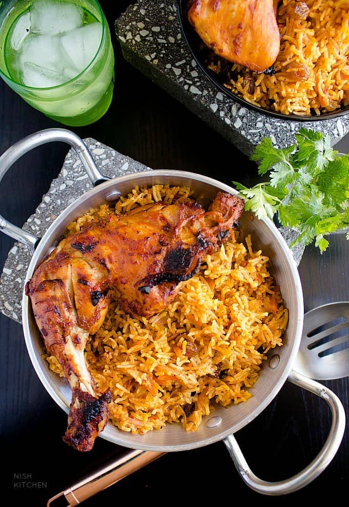

Home page
Kabsa

THE BEST SAUDI FOOD?!
Kabsa (Arabic: كبسة kabsah) or makbūs/machbūs
(مكبوس/مچبوس Gulf pron.: [mɑtʃˈbuːs]) is an Arab mixed rice dish that originates from Yemen.[1] It is commonly regarded as a national dish in all the countries of the Arabian Peninsula.
It can also be found in regions such as southern Iran, Gaza in Palestine,
[1] and the Malabar Coast of India.
Ingredients
- 8 cups water or 2 liters
- 1 kg whole chicken, cut into 8 pieces
- 4 tablespoons vegetable oil
- 2 medium potatoes or 500 g, cut into medium cubes
- 2 medium onions or 250 g, chopped
- ½ teaspoon ground cinnamon
- ½ teaspoon ground cloves
- ½ teaspoon ground cardamom
- ½ teaspoon ground coriander
- 2 medium medium tomatoes or 300 g, peeled and diced
- 3 tablespoons tomato paste
- 2 cubes MAGGI Chicken Stock
- 4 cups basmati rice or 800 g, washed and drained
Steps:
- Put water and chicken pieces in a large pot,
bring to a boil and skim froth as it appears.
Cover and simmer over low heat for 25 minutes or until the chicken is almost cooked.
Remove chicken from stock and set aside (reserve the stock).
- In another large pot, heat vegetable oil and fry the cooked chicken pieces from all sides until they become golden color. Remove chicken and set it aside again.
- In the same pot cook potato for 3 minutes then add onion and cook for another 5 minutes or until onions become golden color. Add spices, tomatoes, tomato paste and MAGGI chicken Stock cubes. Stir for 2 minutes.
- Add the reserved stock to the pot, the stock should be around 7 cups or 1750ml. Add more water if stock is not enough. Add rice and the fried chicken; bring to a boil with occasional stirring. Cover and simmer for 20 minutes or until rice is cooked.